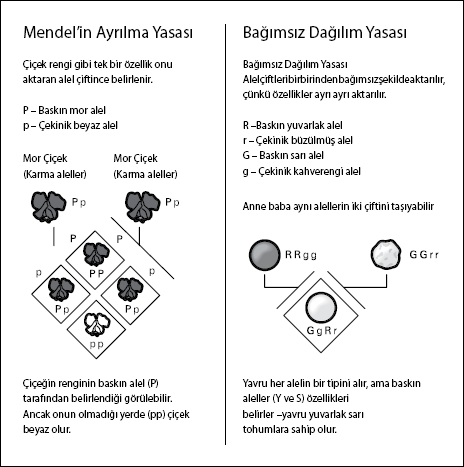

Bir din adamı genleri nasıl keşfetti?
Dr. Michael Mosley, yazar ve The Story of Science
(Bilimin Hikayesi) gibi programların sunucusu ve BBC yapımcısı
Gregor Mendel bildiğiniz din adamlarına benzemiyordu. Çocukluğu sırasında bahçıvan olarak çalışıp arıcılığa merak saldı. 18 yaşında okumak için üç yıllığına Olomouc Üniversitesi'ne gitti. Okulu bitirdikten sonra fizik öğretmeninin tavsiyesi üzerine şimdiki Çek Cumhuriyeti sınırları içinde yer alan Brno'daki Augustinian Manastırı'na girdi. Sekiz yıl sonra geri gelerek, bu kez Viyana Üniversitesi'nde öğrenimine devam etti. Buradaki fizik profesörü "Doppler kayması"na ismini veren Christian Doppler'di. Mendel, 1853 yılında Brno'daki manastıra döndüğünde, tahmin edileceği üzere bilimden de vazgeçemiyordu. Astronomi ve meteoroloji öğrenimi aldığı manastırda ders vermenin yanı sıra arı ve daha önemlisi bezelye yetiştiriyordu.
Mendel'den önce pek çok kişi özelliklerin yeni nesillere aktarıldığını biliyordu. 1745'te Fransız doğa filozofu Pierre Maupertius yavruların anne babalarının vücutlarının her bir zerresinden gelen parçalardan oluştuğunu öne sürmüştü. Elbette Charles Darwin de anne babadaki faydalı özelliklerin yavruya aktarıldığı takdirde onun da yararına olacağını biliyordu. Fakat Darwin, Mendel'in çalışmasını hiç duymamıştı, dolayısıyla hiç kimse doğal seleksiyonun ardında yatan işleyişi henüz ortaya çıkarmamıştı.
Genleri Keşfetmek
Mendel, daha dayanıklı mahsuller verecek daha iyi hibritleri nasıl elde edeceğini bulmak için bezelye yetiştiriyordu. O zamanlar insanlar, sözgelimi mor çiçekle beyaz çiçeğin çaprazlanmasından açık menekşe renginde (baştaki iki rengin ortalaması) melez bir çiçeğin elde edileceğini bilmiyor değillerdi. Fakat Mendel, bezelyelerin özelliklerini incelediğinde, belli özelliklerin tek tek aktarılabileceği sonucuna vardı; çoğu zaman yavru bezelye ya bembeyaz veya mor çiçeklere sahipti. Mendel bitkilerin içindeki "faktör" adını verdiği kalıtım birimlerinin (şimdi "gen" diye bildiğimiz) çiçeğin hangi renkte olacağını belirlediğini tahmin etti.
Önemli olan bir başka nokta ise bazen çekinik genlerin baskın genlerce "maskelendiği", böylece çekinik özelliğin yavruda her zaman belirmediğiydi. Öte yandan bu çekinik genler yavruya aktarılıyor ve özellik bir nesil atladıktan sonra gelen nesilde tekrar belirebiliyordu.
Mendel ayrıca organizmaların aynı genin iki tipini ("alel" diye bilinen) taşıdıklarını, ama yavruya sadece bir tipi aktardıklarını da keşfetti. Bağımsız Dağılım Yasası'nı ortaya attı. Buna göre, farklı özellikler birbirinden bağımsız şekilde yavruya aktarılır. Örneğin, tohum şekli ve rengi birlikte aktarılsa bile onların mutlaka anne babada olduğu gibi yavruda belirmesi gerekmez. Her bireyin alel kümesi onun "genetipi" diye bilinir ve bu alellerin organizmanın fizyolojisi açısından görünür etkisine de "fenotip" denir.
Ne yazık ki Mendel 1868'de manastırın başrahipliğini üstlenince bilimsel deneylerini bıraktı ve çalışmaları unutulmaya yüz tuttu. 1884'te öldüğünde yerine geçen kişi çalışmalarını yaktı.

Sonunda Tanınmak
Neyse ki Mendel'in kalıtım yasaları o zamanlar Mendel'in önceki keşfinden habersiz olan Hugo de Vries ve Carl Correns tarafından yeniden keşfedildi. De Vries baskın ve çekinik genlerin bulunduğunu ve kimi özelliklerin bir nesil atlamasının nedenini açıkladı. Bu arada Correns ölmeden önce Mendel'le yazışıyorduysa da, farekulağı üzerine yaptığı deneylerin sonuçlarını yayınladığında, Mendel'in deneylerinin Darwin'in doğal seleksiyon kuramıyla olan bağlantısını fark etmiş görünmüyordu.
Nihayet 1900 yılında Mendel büyük keşiflerinden ve peşinden gelecek bir asırlık keşiflerden dolayı tanındı ve takdir edildi. "Gregor Mendel bilim tarihinde büyük romantik figürlerden biridir. Kendi başına çalışan mütevazı bir din adamı, büyük bir hakikati açığa çıkarmasına rağmen büsbütün göz ardı edildi," diyor Mosley. "Aslında gerçek efsaneden biraz farklı görünüyor, çünkü Mendel ne keşfettiğini tam olarak anlamış değildi ve verileri o kadar kesin ve hatasızdı ki, daha sonra önde gelen bir istatistikçi (R. A. Fisher) onu bulgularda oynama yapmakla suçlamıştı. Ne var ki neticede bunların hiçbiri önemli değil, çünkü Mendel'in manastırda yaptıkları ezber bozucuydu ve modern genetiğin temellerini atmıştı."